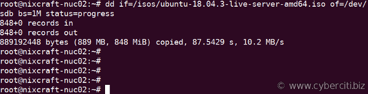

首先，GNU/Hurd是不能通過USB U盤來進入Live的。
https://www.gnu.org/software/hurd/microkernel/mach/gnumach/hardware_compatibility_list.html
USB 1.1/2.0
USB is not supported at this time.
However, USB-type keyboards and mice may (and have been reported to) work nevertheless, given that the hardware / BIOS is doing emulation to the supported legacy interfaces.
目前不支持 USB。
但是，鑑於硬件/BIOS 正在對受支持的傳統接口進行仿真，USB 類型的鍵盤和鼠標可能（並且已經被報告）仍然可以工作。
https://www.cyberciti.biz/faq/creating-a-bootable-ubuntu-usb-stick-on-a-debian-linux/
第 2 步 – 在 Linux 上查找您的 USB 設備名稱（編者註：這裡可以直接使用GParted可視化地確定設備名稱。）
插入您的 U 盤並輸入以下 df 命令以查看它是否自動安裝在 Debian 或任何其他 Linux 桌面系統上：
df
示例輸出（參見我的 USB 的 /media/vivek/data）：
Filesystem 1K-blocks Used Available Use% Mounted on
udev 16432268 0 16432268 0% /dev
tmpfs 3288884 26244 3262640 1% /run
/dev/mapper/md0_crypt 491076512 9641092 456420380 3% /
tmpfs 16444408 105472 16338936 1% /dev/shm
tmpfs 5120 4 5116 1% /run/lock
tmpfs 16444408 0 16444408 0% /sys/fs/cgroup
/dev/sdc1 122546800 124876 116153868 1% /boot
tmpfs 3288880 24 3288856 1% /run/user/119
tmpfs 3288880 72 3288808 1% /run/user/1000
/dev/sdd1 1467360 1467360 0 100% /media/vivek/data
您也可以嘗試使用 lsblk 命令或 dmesg 命令來列出您的 USB 設備：
lsblk
dmesg
您需要卸載 /media/vivek/data：
sudo umount /media/vivek/data
或嘗試：
sudo umount /dev/sdd1
另一種選擇是運行 dmesg 命令來找出 USB 設備名稱：
sudo dmesg
示例輸出：
[461339.310378] usb 2-1.7: new high-speed USB device number 12 using ehci-pci
[461339.420453] usb 2-1.7: New USB device found, idVendor=0781, idProduct=558a
[461339.420457] usb 2-1.7: New USB device strings: Mfr=1, Product=2, SerialNumber=3
[461339.420460] usb 2-1.7: Product: Ultra
[461339.420461] usb 2-1.7: Manufacturer: SanDisk
[461339.420463] usb 2-1.7: SerialNumber: FooBarNixCraftSerialNumber
[461339.421010] usb-storage 2-1.7:1.0: USB Mass Storage device detected
[461339.421457] scsi host6: usb-storage 2-1.7:1.0
[461340.431909] scsi 6:0:0:0: Direct-Access SanDisk Ultra 1.00 PQ: 0 ANSI: 6
[461340.432886] sd 6:0:0:0: Attached scsi generic sg4 type 0
[461340.433448] sd 6:0:0:0: [sdd] 121307136 512-byte logical blocks: (62.1 GB/57.8 GiB)
[461340.435434] sd 6:0:0:0: [sdd] Write Protect is off
[461340.435438] sd 6:0:0:0: [sdd] Mode Sense: 43 00 00 00
[461340.436405] sd 6:0:0:0: [sdd] Write cache: disabled, read cache: enabled, doesn't support DPO or FUA
[461340.449612] sdd: sdd1 sdd2
很明顯 /dev/sdd 是我的 U 盤設備名稱。 您也可以使用 lsblk 命令。 例如：
lsblk
第 4 步 – 在 Linux 上創建可啟動的 U 盤
警告： 請注意 USB stick/pen/disk名稱。 錯誤的名稱總是會導致數據丟失。 確保鍵入正確的名稱。
鍵入 [按照 dd 命令從 .ISO 文件創建可啟動 USB 映像](https://www.cyberciti.biz/faq/how-to-create-disk-image-on-mac-os-x-with -dd命令/）：
sudo dd if=artful-desktop-amd64.iso of=/dev/sdd bs=1M status=progress
另一個例子：
sudo dd if=ubuntu-20.04.1-live-server-amd64.iso of=/dev/sda bs=1M status=progress
dd 命令會將進程數據寫入 U 盤（/dev/sdd 或 /dev/sda），並且屏幕上會出現一個進度條。
Ubuntu 從終端創建可啟動的 Ubuntu USB 閃存驅動器
在此示例中，我將為 ubuntu-18.04.3-live-server-amd64.iso 文件創建一個可啟動的閃存驅動器，如下所示：
sudo dd if=/isos/ubuntu-18.04.3-live-server-amd64.iso of=/dev/sdb bs=1M status=progress

另一個例子
sudo dd if=/isos/ubuntu-19.04-live-server-amd64.iso of=/dev/sdb bs=1M status=progress
這是我看到的：
748+0 records in 748+0 records out 784334848 bytes (784 MB, 748 MiB) copied, 119.174 s, 6.6 MB/s
了解 dd 命令選項
- dd : 啟動 dd 命令寫入 DVD/CD iso 映像。
- if=/iso/ubuntu.iso : 輸入文件的路徑。
- of=/dev/sdd ：目標 USB 磁盤/棒的路徑。
- bs=1M ：一次讀取和寫入最多 BYTES 個字節。 在此示例中，一次 1M。
- status=progress : 將圖像寫入 U 盤時顯示進度條，例如 /dev/sdd。 有關詳細信息，請參閱“Linux dd 命令顯示帶有狀態的進度複製欄”。